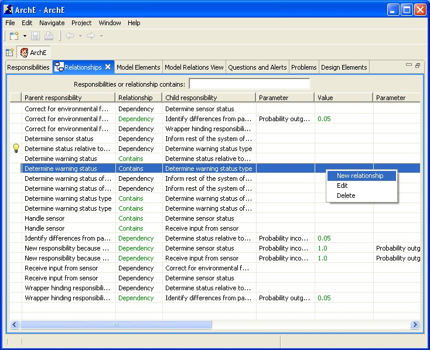
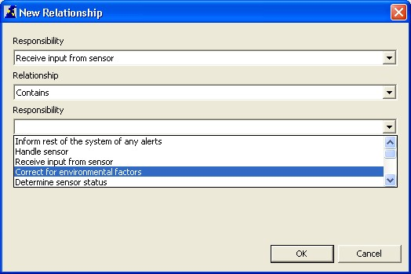
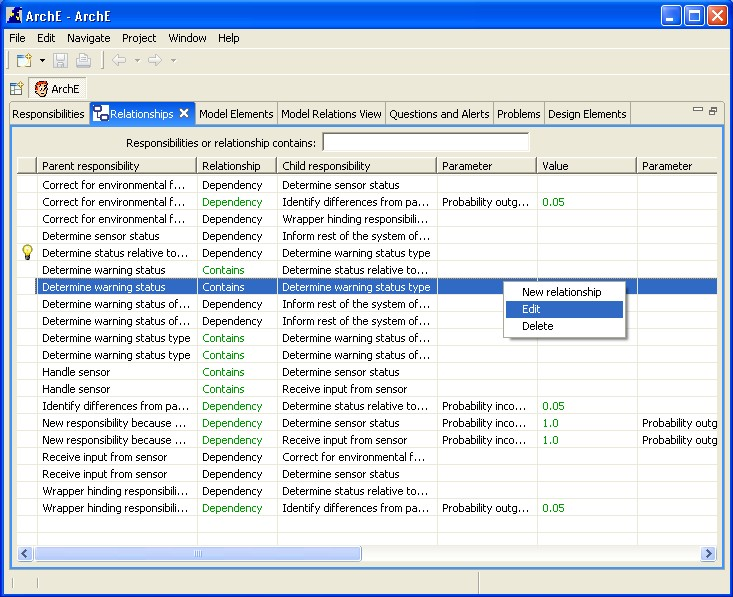
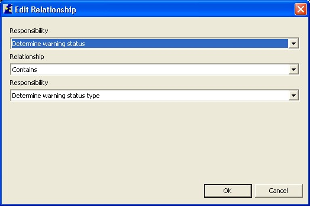
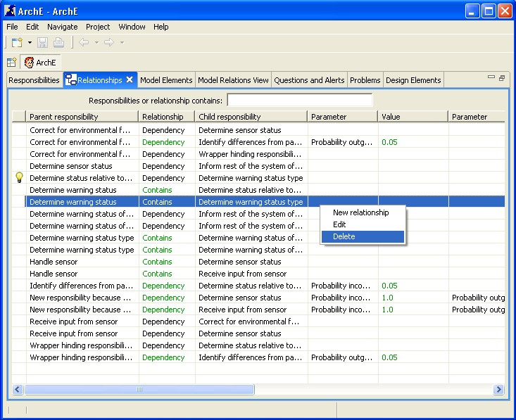
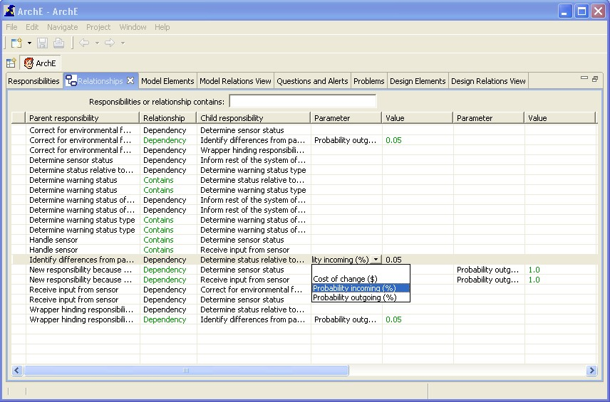
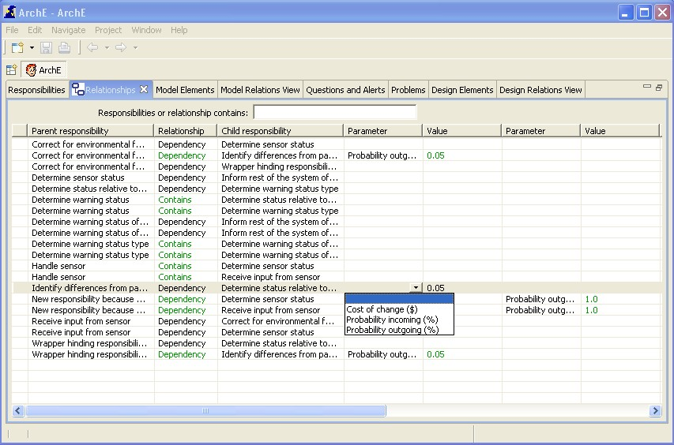

This tutorial will help you to understand the relationships view and the related functionalities.
The relationships view displays the relationships between responsibilities and the parameters (with their respective values) of these responsibility relationships.
Right click in the view and select New from the context menu options.

A dialog box for adding a new relationship should open up. The user can then specify the parent (responsibility), the name of the relationship and the child (responsibility) of the relationship. Cancel closes this dialog box.
After specifying the parent and the child responsibilities and the name of the relationship, clicking OK sends the relationship to the Core and the updated fact base (with the new relationship) is reflected in the view (in the previously selected ordering).

Select a relationship in the view. Right click and select Edit from the context menu options.

A dialog box for editing a relationship should open up. The user can then specify the new parent (responsibility), the name of the relationship and the child (responsibility) of the mapping. Cancel closes this dialog box.
After specifying the parent and the child responsibilities and the name of the relationship, clicking OK sends the updated relationship to the Core and the updated fact base (with the updated relationship) is reflected in the view (in the previously selected ordering).

Select a relationship in the view. Right click and select Delete from the context menu options.

Left click on a cell (under any available ParameterName column) in the row of the relationship for which the parameter is to be created. The icon for a drop down list should become visible on the extreme right of the cell. Click on the icon to view all valid parameters that can be added for this relationship and select the one desired.
Press Enter. This should create a parameter for the relationship with the default value as the value of the parameter.

Both the parameter name and the value can be edited. If the user wants to edit the parameter name, left click on the cell with the name and select another valid (if available) parameter to create for the relationship. This removes the old parameter from the Core and creates a new parameter for the relationship with the default value of the parameter. If the user wants to edit the value, left click on the cell with the value and edit it as desired. After editing in both these cases, the user should press Enter for the changes to be committed to the Core.
Both the parameter name and the value can be deleted. If the user wants to delete the parameter name, left click on the cell with the name and select teh blank ("") parameter name from the drop down list. This removes the parameter from the Core. If the user wants to delete the value, left click on the cell with the value and press Backspace. If the correct datatype (the datatype that is expected by the Core for that parameter value) is a string then the value of the parameter is set to a blank string (""). If the datatype expected is a double or a boolean then the value is set to the default value (as expected by the Core). In most cases where the datatype is double, this default value is 0.0 and in cases where the datatype is boolean, the default value is false. After deleting in both these cases, the user should press Enter for the changes to be committed to the Core.

This tutorial briefly introduced you to all functionalities related to the ArchE Relationships View.